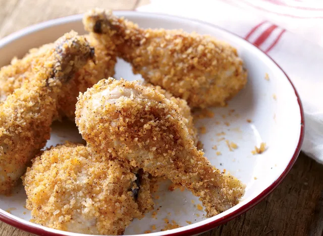

The Best Copycat KFC Fried Chicken

We'll be the first to admit that the idea of oven-fried chicken rubs us the wrong way. Usually, the chicken comes out dry and the crust soggy or non-existent, leaving your need to eat crispy, juicy food unfulfilled. But this version of the oven-fried chicken recipe defies all expectations. First, the chicken is brined in buttermilk and hot sauce, then it's coated in bread crumbs that have been tossed in a gentle amount of oil. The result? The juiciest, crispiest oven-fried chicken ever.
YOU'LL NEED
- 8 chicken drumsticks
- 4 cups non-fat buttermilk
- 1/4 cup salt
- 1/4 cup sugar
- 1 Tbsp hot sauce (preferably Frank's RedHot pepper sauce)
- 2 cups panko bread crumbs
- 2 Tbsp canola or vegetable oil
- 1 tsp chili powder
- 1/2 tsp garlic salt
HOW TO MAKE IT
- Combine the chicken, buttermilk, salt, sugar, and hot sauce in a sealable plastic bag and shake to combine. Refrigerate for at least 2 hours or up to 12 hours.
- Preheat the oven to 350°F.
- In a large mixing bowl, use your fingers to break up the panko bread crumbs into slightly smaller pieces (this will help create a more even coating on the chicken).
- Add the oil, chili powder, and garlic salt and stir to combine.
- Working with one piece at a time, remove the chicken from the marinade, shake off the excess liquid, then toss in the bread crumbs until thoroughly coated.
- Place the chicken pieces on a rack set in a rimmed non-stick baking sheet.
- Bake on the middle rack of the oven for about 30 minutes, until the bread crumbs are evenly browned and the chicken is cooked through.
HOME | Get our recipe for The Best Copycat Pizza Recipe. | The Best Copycat Big Mac Recipe.